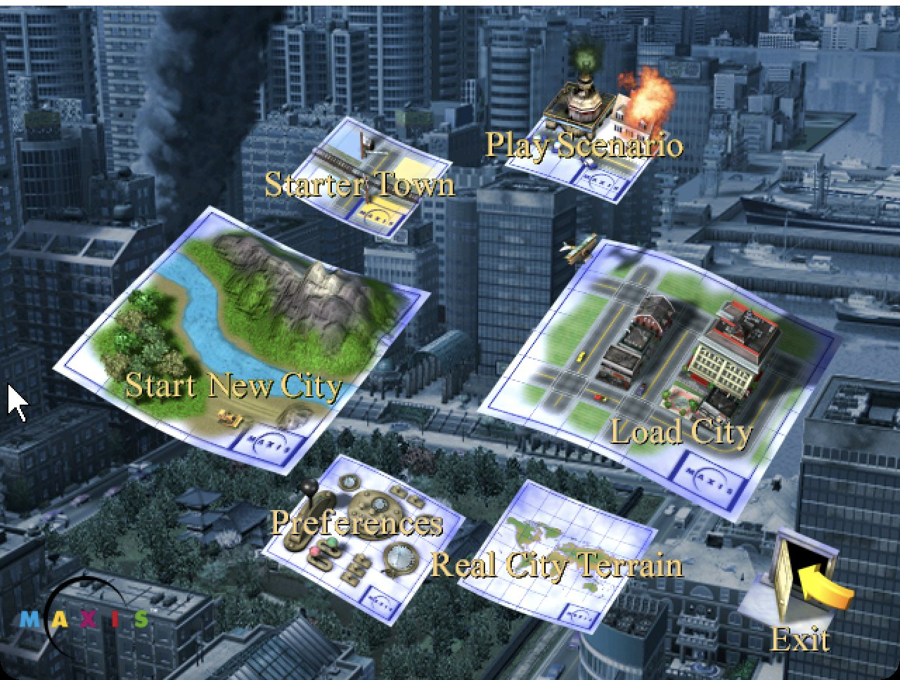

SimCity 3000, running everywhere.
OpenSc3k is an open-source C++ reimplementation of SimCity 3000 Unlimited. One small native executable for macOS, Windows and Linux, powered by SDL3 and the resources from your own copy of the game.
Requires your own installed copy of SimCity 3000 Unlimited.
- 1 executable
- 3 platforms
- C++23
- GPL v3+

The classic city builder, rebuilt in the open.
Same simulation, same interface, same cities — as readable modern code you can run, study and change.
Native on your platform
Runs natively on Apple silicon Macs, Windows x64 and Linux. No emulation layer, no installer, no compatibility shims.
One small executable
SDL3, SDL_ttf and FreeType are linked statically. Download one file, point it at your game folder, play.
Open and hackable
Plain C++23 under the GPL, organised by module — city, network, economy, disasters, audio and UI — so it is easy to read and extend.
Deterministic simulation
The city simulator follows the original rules closely, so the cities you know grow and behave the way you remember.
Your game, your files
No game assets are bundled. OpenSc3k reads the resources from your own legitimate installation and remembers where it is.
Built to last
Reproducible builds with CMake, cross-compiling for Windows with clang, and continuous builds for every platform.
See it running.
Captured from OpenSc3k on macOS, using the cities that ship with the game. Click any image to enlarge.
Get OpenSc3k.
Free to download. You need your own installed copy of SimCity 3000 Unlimited — OpenSc3k does not include any game assets.
Checksums: SHA256SUMS
- Own the gameHave SimCity 3000 Unlimited installed — the folder that contains
AppswithSysandRes. - Install OpenSc3kmacOS: drag it into Applications. Windows: unzip anywhere. If macOS blocks the app, right-click it and choose Open.
- Pick your game folderOn first start OpenSc3k asks where the game is installed and remembers it.
From source in two commands.
CMake 3.25+, a C++23 compiler and Python 3. SDL is fetched and linked statically on first configure.
cmake -S . -B build -DCMAKE_BUILD_TYPE=Release
cmake --build build --target sc3u
SC3_GAME_DIR=/path/to/SimCity3000 build/OpenSc3k -wcmake -S . -B build/windows -G Ninja -DCMAKE_BUILD_TYPE=Release \
-DCMAKE_TOOLCHAIN_FILE=cmake/windows-x64-clang-mingw.cmake
cmake --build build/windows --target sc3uQuestions.
Short answers to the things people ask first.
Do I need the original game?
Yes. OpenSc3k contains no game assets. It loads the graphics, sounds, text and cities from your own installed copy of SimCity 3000 Unlimited.
Which platforms are supported?
macOS on Apple silicon, Windows x64 and Linux x64. Every push is built for all three.
Is it finished?
The game starts, loads cities and plays. It is under active development, so expect some rough edges.
Is it affiliated with the original developers?
No. SimCity 3000 is a trademark of its owners. OpenSc3k is an independent open-source project.
How is it licensed?
GNU General Public License v3.0 or later. Third-party components and their notices are listed in the repository.
macOS says the app can't be opened.
The app is not notarized. Right-click it and choose Open once, or run xattr -dr com.apple.quarantine /Applications/OpenSc3k.app in Terminal.